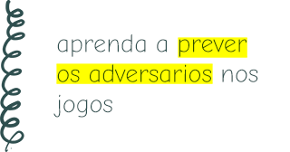
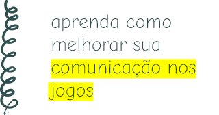

kevin quintino
artigos sobre:
todos
game design
esports

01 de abril de 2020
aprenda a prever os adversários nos jogos

21 de março de 2020
aprenda como melhorar sua comunicação nos jogos

29 de fevereiro de 2020
jogar só ou com amigos, qual a melhor opção?

24 de fevereiro de 2020
conheca os beneficios de acompanhar os eSports

20 de fevereiro de 2020
a importância da autocritica nos jogos

16 de fevereiro de 2020
aprenda a "ser carregado" nos jogos

12 de fevereiro de 2020
a toxicidade nos jogos

04 de fevereiro de 2020
conheça os benefícios da paciência nos jogos

02 de fevereiro de 2020